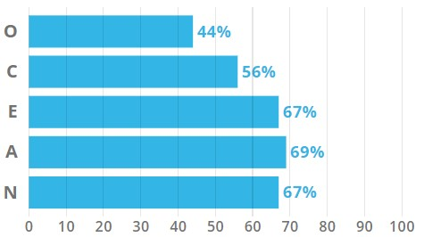

Although these tests can be quite reputable, the results may not always be accurate. So these just are just approximate representations of my personality and learning style.
According to the test, I have an Adventurer personality (ISFP) who has the
the following traits;
- Introverted
- Observant
- Feeling
- Prospecting
It is said that Adventurers have open minds approaching life, new experiences, and people with grounded warmth.
According to the test, I am a Tactile learner. A tactile learner is said to learn by touching and doing, gain an understanding and ability to remember through physical movement. I am said to also have difficulty sitting still. In summation, a "hands-on" learner.
This test measures OCEAN, Openness, Conscientiousness, Extraverison, Aggreableness and Neuroticism. My highest dimension measured was Aggreeableness at 69% and the lowest was Openness at 44%. According to the core patetern I am a practical caretaker.
Big Five Personality Test Results
From the MBTI test, I am somewhat a shy and reserved person who tends to notice things quickly.
In the workplace environment, Adventurers are said to be spontaneous, charming and fun people to be around.
As a tactile learner, things are easier to learn through physical activities. Characteristics of tactile learner include;
- being very well coordinated
- can remember things that were done but may find it difficult to remember what you saw or heard
- communicate by touching
As a Practical Caretaker, it says that I tend to help other people, and maintain stability and security.
From the results, it is stated that I would prefer to be in a team that acknowledges my efforts, not controlling, with goals, and with equal membership in the group. Working in a team may be difficult if I were to be micromanaged by another member. However, from the results, I will be tolerant and friendly towards the other members of the group. When forming a team, I should analyse the behaviours of individual people and how they approach working with other people. I should consider if a team member can be cooperative and assertive.